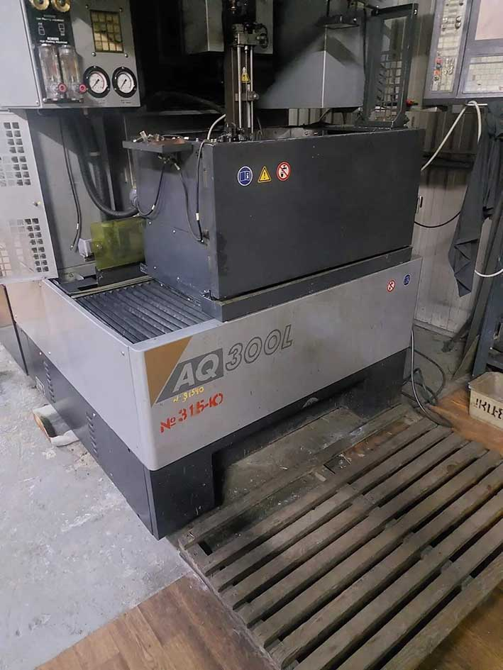
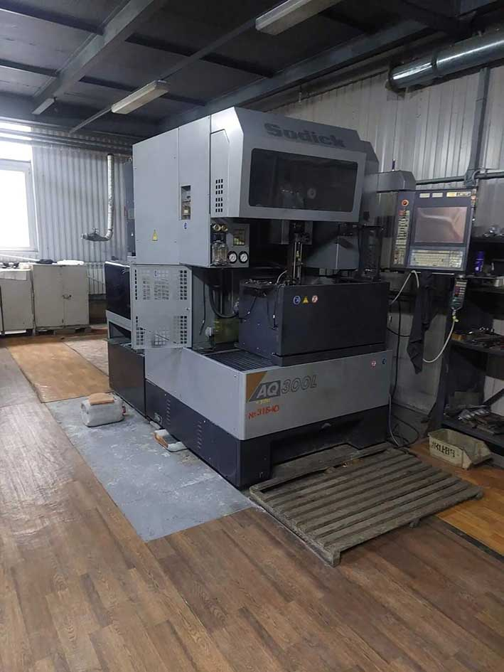
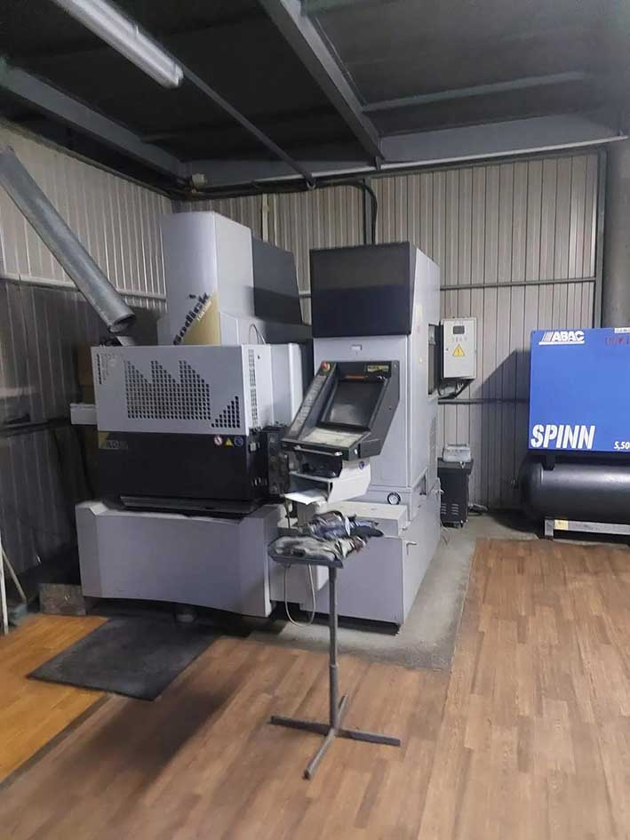

Вы закалили деталь, а теперь не можете просверлить в ней отверстие? Фреза сгорает, сверло ломается, лазер не даёт нужной точности? Это не тупик. Это задача для электроэрозионной обработки металла — технологии, которая работает там, где механический инструмент бессилен.
У нас в цехе — два японских станка Sodick. За последние годы мы обработали на них десятки деталей: от ножей для машиностроения до ремонта вырубных штампов. Ниже расскажу, как это работает и что можно заказать.
Что такое электроэрозионная обработка (ЭЭО)?
В основе метода — электрический разряд. Между электродом-инструментом и заготовкой возникает микроскопическая искра, которая «выбивает» частицы металла с поверхности детали. Никакого механического контакта, никакой деформации.
Именно поэтому электроэрозионная обработка позволяет работать с любыми токопроводящими материалами — независимо от их твёрдости. Закалённая сталь 60 HRC, твёрдый сплав, титан, жаропрочные сплавы — всё это обрабатывается с одинаковой точностью.

Sodick AQ300L: проволочная вырезка металла
Станок Sodick AQ300L — проволочно-вырезной. Электрод здесь — тонкая проволока диаметром 0,15–0,3 мм, которая под управлением ЧПУ идёт по заданному контуру и «разрезает» металл электрическими разрядами.
Это оптимальное решение для сквозных контуров: внешних и внутренних, любой сложности. Нужно вырезать деталь по замкнутому контуру, сделать точный паз, шлиц или отверстие сложной формы — используем AQ300L.

Что делаем на AQ300L
- Пуансоны и матрицы вырубных и формообразующих штампов
- Вставки, знаки, толкатели для пресс-форм
- Внутренние шлицы и пазы в шестернях и валах
- Точные отверстия и посадочные места сложной формы
- Детали медицинских инструментов и имплантов
- Компоненты для аэрокосмической и инструментальной промышленности
Технические характеристики Sodick AQ300L
| Параметр | Значение |
|---|---|
| Рабочие ходы по осям X / Y / Z | 370 × 270 × 250 мм |
| Макс. размер заготовки | 500 × 300 × 200 мм |
| Макс. вес заготовки | 300 кг |
| Угол конусного резания | ±20° на высоте 80 мм |
| Достижимая точность | до ±1,0 мкм (в зависимости от задачи и материала) |
| Диаметр проволоки | 0,15 – 0,3 мм |
Что это значит на практике: обрабатываем деталь размером примерно с лист А3 и весом до 300 кг.
Станок оснащён линейными двигателями по всем осям. В механике нет шарико-винтовых пар, которые могли бы изнашиваться. Точность, заложенная на заводе, сохраняется годами.
Sodick AD3L: прошивная электроэрозия
Станок Sodick AD3L работает по принципу прошивной (объёмной) электроэрозии. Здесь используется электрод-инструмент — обычно из графита или меди, — который имеет форму будущей полости. Электрод опускается в заготовку и «выжигает» металл, постепенно создавая объёмную полость.
Прошивная ЭЭО нужна там, где требуется объёмная полость, а не сквозной контур: формообразующие полости пресс-форм, глухие карманы, внутренние углы, куда не доберётся фреза.

Что делаем на AD3L
- Формообразующие полости пресс-форм для литья пластмасс и металлов
- Глухие отверстия, пазы и карманы сложной формы
- Внутренние углы и рёбра, недоступные для фрезы
- Детали из закалённых и труднообрабатываемых материалов
- Восстановление изношенных деталей штампов и пресс-форм
Технические характеристики Sodick AD3L
| Параметр | Значение |
|---|---|
| Рабочие ходы по осям X / Y / Z | 300 × 250 × 250 мм |
| Размер рабочего стола | 600 × 400 мм |
| Макс. вес заготовки | до 580 кг |
| Сменщик электродов | 4-позиционный |
Станок AD3L рассчитан на прецизионную обработку небольших и средних деталей. Максимальный размер полости — 300 × 250 мм, глубина — до 250 мм.
4-позиционный сменщик электродов позволяет менять инструмент автоматически и продолжать обработку по программе — в том числе в ночную смену без оператора.
Два станка Sodick для разных задач
Станки дополняют друг друга. Если не уверены, какая технология нужна для вашей детали — просто пришлите чертёж, подберём оптимальный вариант.
| Задача | Станок | Технология |
|---|---|---|
| Сквозной контур, паз, шлиц, отверстие сложной формы | Sodick AQ300L | Проволочная вырезка |
| Объёмная полость, глухой карман, формообразующая пресс-форма | Sodick AD3L | Прошивная электроэрозия |
Оба станка работают с:
- Закалённой сталью (до 60 HRC и выше)
- Твёрдыми сплавами
- Титаном и жаропрочными сплавами
- Другими токопроводящими материалами
Точность обоих станков — до ±1 мкм. Это уровень, недостижимый для лазерной резки, фрезерования или сверления.
5 задач, где электроэрозионная обработка незаменима
- Обработка после закалки. Деталь можно закалить, а затем вырезать финальный контур или выжечь полость — без риска деформации и без повторной термообработки.
- Микронная точность. Допуски ±1–5 мкм — это уровень, недостижимый для лазера или фрезы.
- Сложная геометрия. Внутренние углы, узкие пазы, глубокие карманы — всё то, куда не доберётся механический инструмент.
- Отсутствие термического влияния. Зона термического влияния минимальна и значительно меньше, чем при лазерной резке.
- Обработка труднообрабатываемых материалов. Титан, твёрдые сплавы, жаропрочные стали — всё, что не поддаётся фрезерованию.
Где применяется электроэрозионная обработка
ЭЭО востребована там, где нужна микроточность и работа с труднообрабатываемыми материалами. Вот основные направления:
- Инструментальное производство. Штампы, пресс-формы, пуансоны, матрицы — основа серийного производства. Восстановление изношенной оснастки — отдельная большая тема.
- Машиностроение. Прецизионные шестерни, шлицы, шпоночные пазы, детали трансмиссий из закалённой стали.
- Медицинская промышленность. Ортопедические имплантаты, хирургические инструменты из титана и кобальт-хромовых сплавов.
- Авиакосмическая отрасль. Турбинные лопатки с перфорационными отверстиями, детали двигателей из жаропрочных сплавов.
- Приборостроение и электроника. Прецизионные кронштейны, оси, корпусные узлы мехатронных систем.
Стоимость и сроки
Стоимость электроэрозионной обработки считаем индивидуально. Она зависит от:
- сложности контура или формы полости;
- материала заготовки (закалённая сталь, титан, твёрдый сплав);
- толщины и глубины обработки;
- объёма партии (единичная деталь или серия).
ЭЭО дороже фрезеровки, но часто дешевле, чем изготовление нового штампа или пресс-формы. Если деталь нужно обработать после закалки — ЭЭО нередко единственное решение.
Все цены указаны без НДС. НДС 22% добавляется при оформлении заявки (ФЗ от 28.11.2025 №425-ФЗ).
Прайс на другие услуги — в разделе «Прайс-лист» на главной. Для быстрой ориентировочной оценки стоимости лазерной резки и пробивки — используйте наш онлайн-калькулятор.
Что мы режем на ЭЭО: примеры задач
Проще показать, чем рассказывать. Вот два реальных заказа из нашей практики — с разрешения заказчиков публикуем без названий компаний.
Кейс 1. Нож МЗ 300.100.22 для машиностроительного предприятия
К нам пришёл чертёж ножа. На чертеже стояла прямая надпись от технолога заказчика: «После электроэрозии». То есть деталь нужно было закалить, а потом обработать финишно — потому что фрезой или шлифовкой добиться нужной кромки уже невозможно.
- Материал: инструментальная сталь Х12МФ;
- Твёрдость после закалки: 54–58 HRC;
- Габариты: 300 × 100 × 22 мм;
- Количество: 2 шт.;
- Требования: допуск 0,1 мм, шероховатость Ra 2,5;
- Срок: 10 рабочих дней.
Обработали на проволочно-вырезном станке AQ300L. Результат принят ОТК заказчика без замечаний. Через полгода клиент вернулся с повторным заказом — по той же детали.
Кейс 2. Ремонт вырубного штампа для приборостроительного предприятия
Заказ 2023 года. Штамп был в эксплуатации несколько лет, рабочие части износились. Заменили 12 позиций: матрицы, пуансоны и направляющие элементы.
- Материал: инструментальная сталь, закалка 58–60 HRC;
- Габариты штампа: ~300 × 200 × 150 мм;
- Что делали ЭЭО: чистовую обработку фасонных окон матриц после закалки;
- Срок: 20 рабочих дней;
- Требования: точность и стойкость по техзаданию заказчика.
Штамп работает до сих пор. Это, кстати, характерная история: многие клиенты приходят один раз с ремонтом, а потом остаются на годы — потому что новая оснастка стоит в разы дороже, чем её восстановление.
Частые вопросы
Сколько стоит электроэрозионная обработка?
Считаем индивидуально — зависит от сложности контура, материала, толщины и объёма партии. ЭЭО дороже фрезеровки, но часто дешевле, чем изготовление нового штампа или пресс-формы. Отправьте чертёж — подготовим расчёт за 2 часа.
Сколько времени занимает обработка?
Одна деталь — от нескольких часов. Серия — от 1–2 дней. Точные сроки зависят от сложности контура и объёма партии.
Вы обрабатываете пластик или керамику?
Нет. ЭЭО работает только с токопроводящими материалами. Для пластика, керамики или композитов у нас есть другие технологии — уточните у менеджера.
Какой максимальный размер детали?
На проволочно-вырезном Sodick AQ300L — заготовка до 500 × 300 × 200 мм, вес до 300 кг. На прошивном Sodick AD3L — полость до 300 × 250 мм, глубина до 250 мм, вес заготовки до 580 кг. Если деталь больше — свяжитесь с нами, предложим альтернативу.
Вы работаете с заказчиками из других городов?
Да, работаем по всей России. Отправка готовых деталей — транспортными компаниями. Находимся в Рязани, что удобно для предприятий Центрального федерального округа.
Включён ли НДС в стоимость?
Цены в прайсе и расчётах указаны без НДС. НДС 22% добавляется при оформлении заявки. Основание: ФЗ от 28.11.2025 №425-ФЗ.
Как заказать?
Отправьте чертёж в DXF, DWG или PDF через форму на сайте или на sale@tochtex.ru. Подготовим коммерческое предложение в течение 2 часов.
Другие услуги
Помимо электроэрозионной обработки, мы выполняем полный цикл металлообработки:
- Лазерная резка, пробивка, гибка, сварка
- Токарные, фрезерные, шлифовальные работы
- Порошковая окраска, гальваника
- SMT-монтаж, сборка жгутов, электромонтаж
- Изготовление пресс-форм и штампов
Читайте также
- Как рассчитать стоимость лазерной резки металла: формула и примеры — разбор ценообразования на примере лазерной резки.
- 5-осевая ЭЭО: паз от 0,25 мм, цена от 1600 ₽/час — как мы режем металл, который не берёт фреза.
Нужна электроэрозионная обработка?
Отправьте чертёж в DXF, DWG или PDF — подготовим коммерческое предложение за 2 часа.